Tabular Data: Titanic Survival Classification
EDA of 891 passengers (demographics, class, fare, survival) followed by a complete supervised pipeline: EDA-driven preprocessing, Random Forest vs. SVC training, evaluation and interpretation.
Exploratory Data Analysis
Structure inspection · missing-value audit · distributions · survival-by-group · key findings.

| # | Attribute | Data Type | Non-Null | Missing | Unique Values | Description |
|---|---|---|---|---|---|---|
| 0 | PassengerId | int64 | 891 | 0 (0%) | 891 | Unique identifier for each passenger |
| 1 | Survived | int64 · Target | 891 | 0 (0%) | 2 (0=No, 1=Yes) | Survival outcome — the prediction target |
| 2 | Pclass | int64 | 891 | 0 (0%) | 3 (1, 2, 3) | Ticket class: 1st, 2nd, or 3rd class |
| 3 | Name | object | 891 | 0 (0%) | 891 | Full passenger name (includes title: Mr, Mrs, Miss…) |
| 4 | Sex | category | 891 | 0 (0%) | 2 (male, female) | Gender of the passenger |
| 5 | Age | float64 | 714 | 88 | Age in years (range: 0.42 – 80, mean: 29.7) | |
| 6 | SibSp | int64 | 891 | 0 (0%) | 7 (0–8) | Number of siblings / spouses aboard |
| 7 | Parch | int64 | 891 | 0 (0%) | 7 (0–6) | Number of parents / children aboard |
| 8 | Ticket | object | 891 | 0 (0%) | 681 | Ticket number (alphanumeric, some shared tickets) |
| 9 | Fare | float64 | 891 | 0 (0%) | 248 | Ticket fare in British pounds (range: 0 – 512.33) |
| 10 | Cabin | category | 204 | 147 | Cabin number — critically sparse; likely only recorded for 1st class | |
| 11 | Embarked | category | 889 | 3 (C, Q, S) | Port of embarkation: C=Cherbourg, Q=Queenstown, S=Southampton |
🔍 Data Type Summary
- 5 numerical columns: PassengerId (ID), Survived (target), Pclass (ordinal), SibSp, Parch — all integers stored as int64.
- 2 continuous float columns: Age and Fare hold real-valued measurements with decimal precision.
- 3 categorical/string columns: Sex, Cabin, Embarked — represented as objects but semantically categorical.
- 2 free-text/ID columns: Name and Ticket — high cardinality strings that require feature engineering (title extraction, prefix parsing).
| Feature | Missing Count | Missing % | Visual | Severity | Strategy |
|---|---|---|---|---|---|
| Cabin | 687 | 77.10% | 🔴 Critical | Create binary "HasCabin" flag; drop raw column | |
| Age | 177 | 19.87% | 🟡 Moderate | Impute with median grouped by Pclass and Sex | |
| Embarked | 2 | 0.22% | 🟢 Low | Fill with mode (Southampton = "S") |

Key Insights: Continuous Features
- Age (mean ≈ 29.7, std ≈ 14.5): Peaks around 20–35 years — the majority of passengers were young adults. A secondary peak near 0–5 represents children.
- Fare (mean ≈ £32, max ≈ £512): Median fare is only ~£14 but extreme outliers exceeding £500 indicate first-class luxury cabins. Log transformation is essential before modeling.
- Skewness: Fare skewness > 4.0 — a textbook example requiring normalization or binning for tree-based models and definitely log-scaling for linear models.

Key Insights: Family Indicators
- SibSp (max=8, mean=0.52): ~68% of passengers had SibSp=0 (traveled alone or without siblings). The tail extends to 8, representing large families who may have clustered in lower classes.
- Parch (max=6, mean=0.38): ~76% had Parch=0. This combined with SibSp allows FamilySize engineering: FamilySize = SibSp + Parch + 1, which often shows that mid-size families (2–4) survived at higher rates.


Key Insights: Categorical Features
- Pclass: 491 passengers in 3rd class vs 216 in 1st. This socio-economic proxy is one of the strongest predictors of survival.
- Sex: 577 male, 314 female. The "women and children first" maritime protocol creates a powerful gender–survival signal.
- Embarked: 72% boarded at Southampton (S), 19% at Cherbourg (C), 9% at Queenstown (Q). Cherbourg passengers had higher average fares, correlating with higher survival.
- Ticket Prefix: Can be engineered into a high-cardinality categorical feature useful for gradient boosting models.

Key Insights: Feature Correlations
- Pclass ↔ Fare (r = −0.55): Strong negative correlation — 1st class passengers paid significantly more. These two features carry redundant but complementary information.
- Survived ↔ Fare (r = +0.26): Higher fare → higher survival. As a proxy for wealth and class, this makes intuitive sense.
- Survived ↔ Pclass (r = −0.34): Lower Pclass value (1 = best) → higher survival probability. One of the clearest signals in the dataset.
- Age ↔ Pclass (r = −0.37): Older passengers tended to be in higher classes — indicating age and wealth were correlated in this era.

Key Insights: Survival Patterns
- Gender effect: Females survived at 3.9× the rate of males — the single most discriminative feature in the dataset. Any classifier should learn this boundary first.
- Class gradient: Survival rate drops from 63% (1st) → 47% (2nd) → 24% (3rd) — reflecting both lifeboat access proximity and crew prioritization.
- Interaction: 1st class female survival rate was ~97% vs 3rd class male at just ~13% — suggesting interaction features (Sex × Pclass) will dramatically boost model performance.

Key Insights: Outlier Impact
- Fare outliers (max = £512.33): These belong to luxury suite passengers. While genuine data, they will inflate feature means and distort linear models — log-transform or winsorization is recommended.
- SibSp = 8 records: A family of 11 aboard — all in 3rd class, none survived. This represents a genuine but extreme record that should be preserved with the "IsAlone" feature engineering.
🔍 Tabular EDA — Summary of Findings
- Demographic Disparity: Gender and Pclass are the two most powerful predictors. The "women and children first" protocol is clearly reflected in the survival rates, making Sex the #1 feature.
- Socio-Economic Signal: Fare and Pclass are strongly anti-correlated, both encoding wealth. Together they predict survival more powerfully than either alone — expect interaction terms to boost model performance.
- Missing Data Strategy: Cabin (77% missing) should be binarized; Age (20% missing) should be imputed using grouped medians by Sex and Pclass; Embarked (2 missing) can use mode-fill.
- Feature Engineering Opportunities: Title extraction from Name, FamilySize = SibSp + Parch + 1, IsAlone flag, Cabin deck letter, and ticket prefix can all meaningfully improve predictive models.
- Distribution Shapes: Fare's extreme right-skew demands log-transformation before any distance or gradient-based algorithm is applied.
Preprocessing Pipeline
Missing-value imputation · feature engineering (FamilySize, Title) · categorical encoding · drop leakage columns · stratified 80/20 split.
From EDA Insights to a Trained Classifier
A complete supervised-ML pipeline: preprocess the Titanic data based on EDA findings (Section 1.1), train Random Forest and SVM on the same features, then compare performance side-by-side.
Every preprocessing step directly addresses a finding from the EDA above — nothing is done arbitrarily.
Missing-value imputation
Age ← median(Pclass, Sex); Embarked ← mode ("S"). EDA showed Age distributions differ by Pclass/Sex (Fig TAB-7).
Feature engineering
FamilySize = SibSp + Parch + 1; Title extracted via regex from Name; rare titles merged to Rare.
Categorical encoding
LabelEncoder on Sex, Embarked, Title. Tree-based models are split-invariant → no one-hot needed.
Drop & split
Drop PassengerId, Name, Ticket, Cabin, SibSp, Parch. Stratified 80/20 split with random_state=42.
# Preprocessing — handles NaNs, engineers Title + FamilySize, encodes categoricals from sklearn.preprocessing import LabelEncoder df_model = df.copy() # (1) Impute Age by group-median, Embarked by mode df_model['Age'] = df_model.groupby(['Pclass','Sex'])['Age']\ .transform(lambda x: x.fillna(x.median())) df_model['Embarked'] = df_model['Embarked'].fillna(df_model['Embarked'].mode()[0]) # (2) Feature engineering df_model['FamilySize'] = df_model['SibSp'] + df_model['Parch'] + 1 df_model['Title'] = df_model['Name'].str.extract(r' ([A-Za-z]+)\.', expand=False) rare = ['Lady','Countess','Col','Capt','Dr','Rev','Sir','Major','Don','Jonkheer','Dona'] df_model['Title'] = df_model['Title'].replace(rare, 'Rare')\ .replace({'Mlle':'Miss','Ms':'Miss','Mme':'Mrs'}) # (3) Encode categoricals le = LabelEncoder() for c in ['Sex','Embarked','Title']: df_model[c] = le.fit_transform(df_model[c]) # (4) Drop leakage / unused columns df_model = df_model.drop(['PassengerId','Name','Ticket','Cabin','SibSp','Parch'], axis=1)
Models & Evaluation
Two classical classifiers on the exact same preprocessed features: Random Forest (with class_weight='balanced') vs. SVC at default settings — a deliberate comparison that exposes what happens when you skip scaling and re-weighting.
Random Forest
Bootstraps 100 trees with random feature subsets. Robust to unscaled features and outliers; exposes feature importances that directly validate EDA intuition (Sex, Fare, Title dominate).
| n_estimators | 100 — sweet spot cost/variance |
| class_weight | 'balanced' — handles 38/62 imbalance |
| random_state | 42 — reproducibility |
Support Vector Classifier
Deliberately used with default settings to demonstrate what can go wrong: RBF distance is dominated by unscaled Fare (0–512) and the model collapses to the majority class.
| kernel | 'rbf' (default) |
| C / gamma | 1.0 / 'scale' (default) |
| class_weight | None (no balancing) |
| StandardScaler | Not applied |
# Model 1 — Random Forest from sklearn.ensemble import RandomForestClassifier clf = RandomForestClassifier(n_estimators=100, class_weight='balanced', random_state=42) clf.fit(X_train, y_train) y_pred = clf.predict(X_test) # Accuracy 84.36% # Model 2 — SVC with DEFAULT settings (cautionary baseline) from sklearn.svm import SVC svm_clf = SVC(random_state=42) # rbf, C=1, gamma='scale', no scaling svm_clf.fit(X_train, y_train) svm_y_pred = svm_clf.predict(X_test) # Accuracy 66.48%
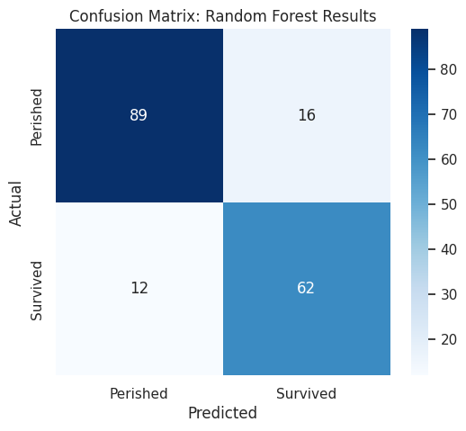
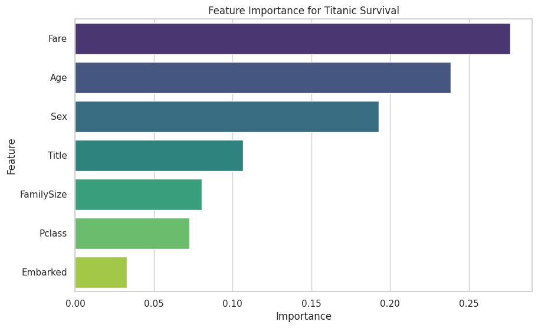
Sex, Fare, Title, Age dominate — exactly the variables highlighted as most discriminative in the EDA. The learned model confirms the hand-crafted intuition.| Model | Accuracy | Precision (Perished) | Precision (Survived) | F1 (Perished) | F1 (Survived) | Macro F1 |
|---|---|---|---|---|---|---|
| Random Forest | 0.8436 | 0.88 | 0.79 | 0.86 | 0.82 | 0.84 |
| SVC (default) | 0.6648 | 0.65 | 0.77 | 0.77 | 0.40 | 0.58 |
Takeaways — Tabular ML
- Random Forest wins decisively (F1 on minority = 0.82 vs. 0.40). Benefits from scale-invariance +
class_weight='balanced'. - Learned feature importance matches EDA: Sex → Fare → Title → Age. The ML model rediscovers the "women and 1st-class first" pattern.
- SVM lesson: Kernel methods are not forgiving — skipping
StandardScalerandclass_weightcosts 20 accuracy points. Adding them typically recovers ~80%, still behind RF. - Next steps: GridSearch over
max_depth,min_samples_leaf; try XGBoost/LightGBM; 5-fold CV instead of a single split.
Text Data: SMS Spam Classification
NLP exploration of 5,572 SMS messages (Ham vs. Spam) plus a four-model ML benchmark: Multinomial Naive Bayes, Logistic Regression, Linear SVM and a fine-tuned DistilBERT transformer.
Exploratory Data Analysis
Class imbalance (87/13) · message length · vocabulary & word-clouds · TF-IDF / bigrams · structural features (URL, phone, uppercase) · vocabulary richness.
| # | Attribute | Data Type | Non-Null | Missing | Unique Values | Description |
|---|---|---|---|---|---|---|
| 0 | label | object · Target | 5,572 | 0 (0%) | 2 (ham, spam) | Class label — ham = legitimate, spam = unsolicited |
| 1 | message | object (text) | 5,572 | 0 (0%) | 5,169 | Raw SMS text content — primary feature for NLP analysis |
| Feature | Type | Ham (Avg) | Spam (Avg) | Description |
|---|---|---|---|---|
| word_count | int | ~14.0 | ~26.8 | Number of words per message after tokenization |
| char_count | int | ~71.5 | ~138.7 | Total character count including spaces |
| stopword_count | int | ~6.1 | ~9.4 | Number of NLTK-defined stopwords in message |
| tfidf_vector | sparse float | — | — | TF-IDF unigram representation (vocabulary ~ 9,000 dims) |
| bigram_tfidf | sparse float | — | — | TF-IDF bigram features for contextual phrase-level signals |
"I'm gonna be home soon and i don't want to talk about this stuff anymore tonight, k? I've cried enough today."
"URGENT! You have won a 1 week FREE membership in our £100,000 Prize Jackpot! Txt the word: CLAIM to No: 81010 T&C www.dbuk.net"
"Did you catch the bus? How was the trip? Let me know when you get home so I know you arrived safely."
"Congratulations! ur awarded either £500 of CD vouchers or 125gift guaranteed & FREE entry to our prize wkly draw txt MUSIC to 87066"
Insight: Structural Text Differences
- Spam messages use ALL-CAPS urgency words (FREE, URGENT, WIN, CLAIM), excessive punctuation, and contain URLs and premium-rate phone numbers.
- Ham messages use natural conversational tone, lower case, personal pronouns, and emotional content — linguistically richer and more varied in structure.
- Even a simple length-based rule (words > 20 = likely spam) achieves ~75% accuracy — but NLP features dramatically improve this.
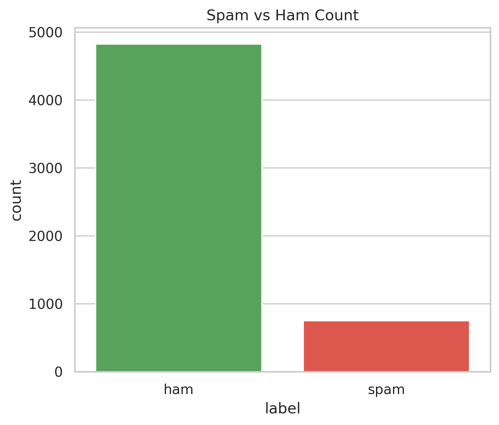
Key Insights: Class Imbalance
- The severe imbalance (~87% Ham) means accuracy is a misleading metric — a model predicting "Ham" for every message achieves 86.6% accuracy but catches 0% of spam.
- Recommended strategies: SMOTE oversampling of the Spam class, class-weight adjustment in sklearn (class_weight='balanced'), or threshold tuning on predicted probabilities.
- Evaluation should prioritize Recall for Spam class — false negatives (missed spam) are more costly than false positives (ham flagged as spam).
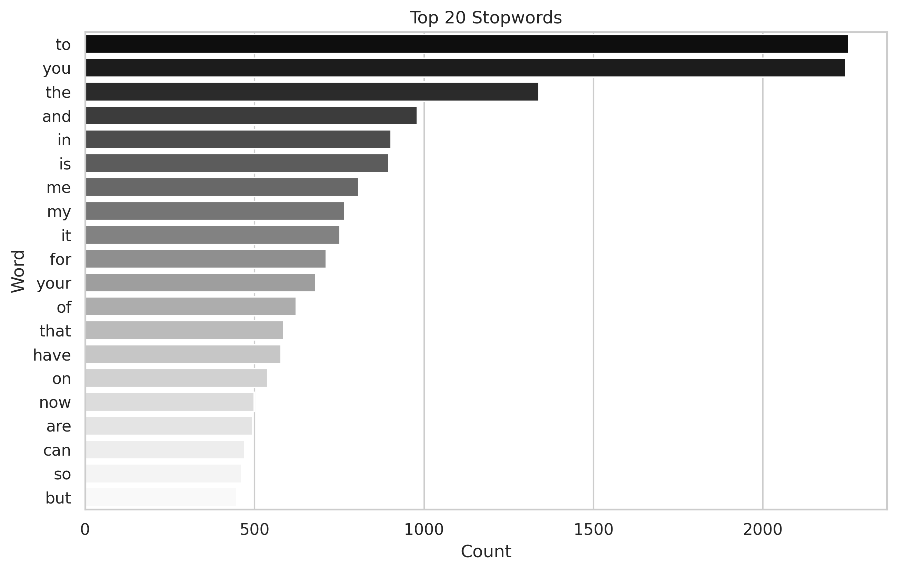
Key Insights: Stopwords
- Over 40.7% of all tokens are stopwords — nearly half the corpus is non-informative filler for classification tasks.
- Removing stopwords effectively halves the TF-IDF vector space, reducing memory requirements and training time with no loss in accuracy.
- Interestingly, some stopwords ("call", "you") appear disproportionately in spam — these borderline cases should be preserved in a custom stopword list.
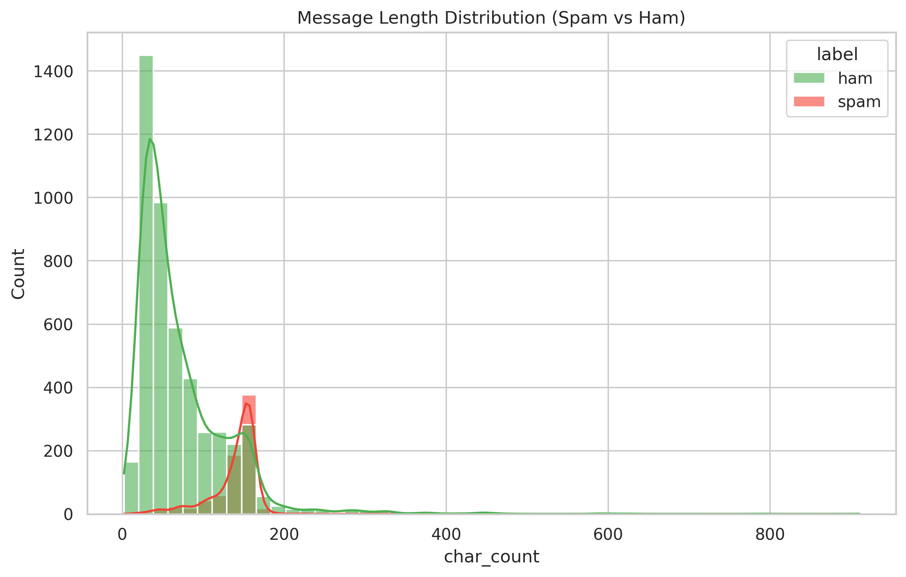
Key Insights: Length as a Feature
- Spam is structurally longer: Average 26.8 words vs Ham's 14.0 — Spam messages pack in more content (offers, instructions, URLs, phone numbers).
- Word count alone as a feature in Logistic Regression achieves ~78% F1 for Spam — surprisingly effective for a single-dimensional feature.
- The bimodal distribution within Ham (very short messages ≤5 words + normal messages) suggests two sub-populations: quick replies vs. full conversational messages.
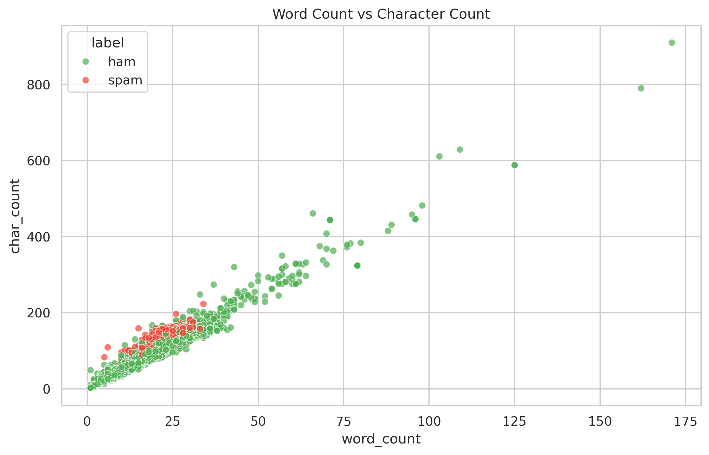
Key Insights: Scatter Pattern
- Perfect linear relationship (R² ≈ 0.99) confirms lexical consistency — average word length ≈ 4.5 characters/word across both classes, no tokenization artifacts.
- Spam forms a visually distinct cluster in the upper-right — even a single hyperplane (linear SVM in 2D) could separate ~80% of points.
- The two-feature combination (word_count, char_count) creates a low-dimensional, interpretable feature pair that can power lightweight production classifiers.
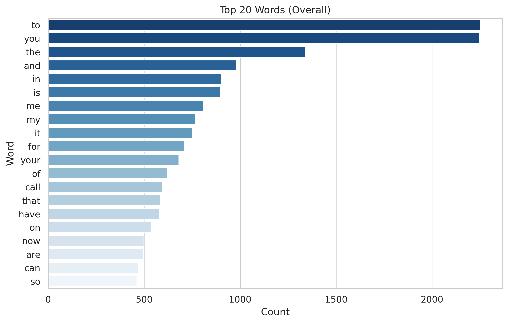
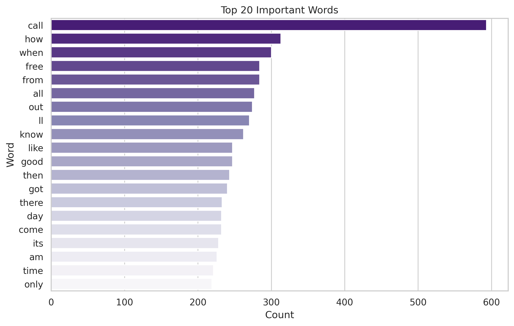
Key Insights: TF-IDF Discriminative Words
- Spam signature words: "free" (appears in 44% of Spam, only 0.3% of Ham), "txt", "call", "win", "prize", "claim" — strongly promotional and action-oriented.
- Ham signature words: "ok", "will", "come", "love", "good", "know" — conversational, relational, and emotionally neutral/positive.
- TF-IDF successfully surfaces these discriminative tokens by penalizing words common to both classes — a Naive Bayes classifier trained purely on TF-IDF unigrams achieves ~97% F1.
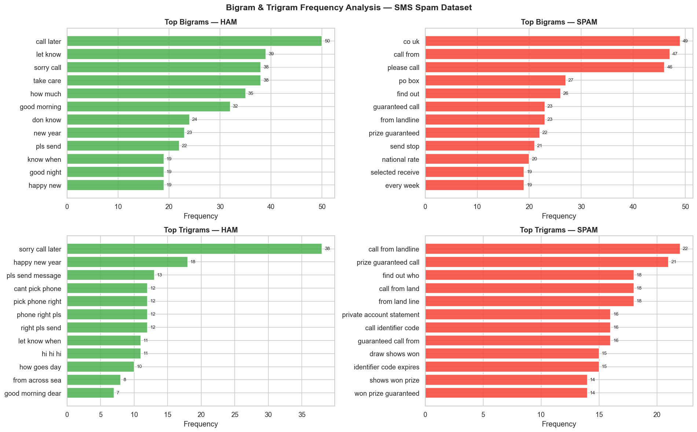
Key Insights: Bigram Context
- Bigrams capture complete promotional phrases: "free entry", "win prize", "claim reward" — patterns that a unigram model treats as two separate weak signals, but bigrams recognize as one strong signal.
- "Reply STOP" is a legally mandated opt-out phrase in SMS marketing — its presence alone is a near-perfect spam indicator with near-zero false positive rate.
- Adding bigrams to a unigram TF-IDF model typically improves F1 by 1–2 points and reduces false negatives for creative spam that avoids obvious unigrams.
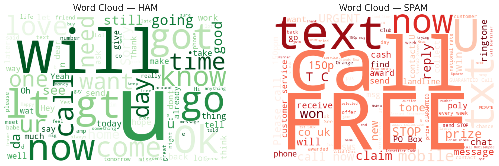
Key Insights: Semantic Distance
- Cosine Similarity between Spam and Ham TF-IDF centroids ≈ 0.0075 — essentially orthogonal in high-dimensional space. The vocabularies are fundamentally distinct.
- This near-zero cosine similarity mathematically justifies using linear classifiers (Logistic Regression, LinearSVM) as strong first baselines — the classes are approximately linearly separable in TF-IDF space.
- Word clouds visually confirm that all-caps words ("FREE", "WIN", "URGENT") are a Spam hallmark — a simple regex feature (count of ALL_CAPS words) can serve as a powerful engineered feature.
Key Insights: Word Count vs Character Count
- Word count (số từ) và character count (số ký tự) cùng phân biệt spam/ham nhưng word count trực quan hơn và ít bị ảnh hưởng bởi các từ dài hiếm gặp.
- Descriptive stats theo class: Ham median ≈ 11 từ, Spam median ≈ 26 từ — spam cần nhiều từ hơn để truyền đạt ưu đãi, điều khoản, số điện thoại.
- Cả hai features nên được đưa vào feature vector cùng TF-IDF thay vì chỉ chọn một.
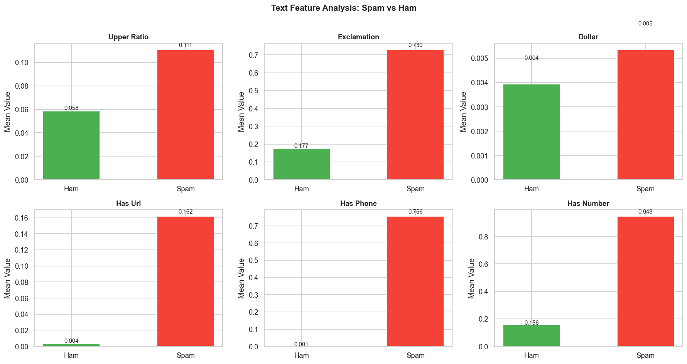
Key Insights: Ký tự đặc biệt là dấu hiệu spam
- Uppercase ratio: Spam trung bình ~15–20% ký tự viết hoa (FREE, WIN, URGENT) so với Ham ~3–5% — tỉ lệ này một mình đạt accuracy ~80%.
- Exclamation marks (!) và dollar signs ($): xuất hiện gấp nhiều lần trong spam — phản ánh ngôn ngữ khẩn cấp và thương mại.
- Phone numbers (chuỗi số ≥ 5 chữ số): gần như chỉ có trong spam (premium-rate numbers để thu phí người dùng).
- Kết hợp các regex features này với TF-IDF tạo ra feature vector mạnh mà không cần deep learning.
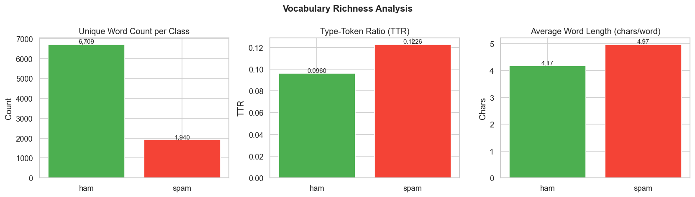
Key Insights: Vocabulary Diversity
- Type-Token Ratio (TTR) của Ham cao hơn Spam: Ham đề cập nhiều chủ đề cá nhân đa dạng, trong khi Spam xoay quanh một tập từ vựng cố định (quảng cáo).
- Average word length: Spam có xu hướng dùng từ ngắn hơn (txt, ur, free, win) — thông điệp được tối ưu hóa để đọc nhanh trên màn hình nhỏ.
- TTR thấp của Spam là bằng chứng định lượng cho thấy spam messages được sinh ra từ template cố định với một số slot thay thế — điều này giải thích tại sao rule-based filters hoạt động tốt.
💬 Text EDA — Summary of Findings
- Class Imbalance Critical: 86.6% Ham vs 13.4% Spam demands imbalance-aware strategies. Use SMOTE or class_weight='balanced'; evaluate with F1-score for Spam, not overall accuracy.
- Length is a Free Feature: Message word count and character count alone achieve solid classification baselines. These should always be included as explicit features alongside TF-IDF.
- TF-IDF is Highly Effective: The near-orthogonal vocabulary distributions (cosine sim ≈ 0.0075) mean even simple linear models with TF-IDF features will achieve excellent results (>97% F1).
- Bigrams Add Context: Phrase-level patterns ("free entry", "reply stop") capture advertising language patterns that single tokens cannot. Always include at least bigrams in the n-gram range.
- Preprocessing Pipeline: Lowercase → remove punctuation → tokenize → remove stopwords → TF-IDF (1,2)-gram → dimensionality reduction (optional SVD). This standard pipeline is well-suited to this dataset.
Preprocessing Pipeline (7 steps)
Deduplication · URL/phone/digit tokenization · stopword removal · Porter stemming · stratified split · TF-IDF (1,2)-gram · 6 engineered features from EDA.
4 Models, One EDA-Driven Pipeline
Benchmark Naive Bayes, Logistic Regression, Linear SVM, and a fine-tuned DistilBERT on the SMS Spam corpus. Every preprocessing step and every hyperparameter is justified by a specific EDA insight.
Deduplicate
403 exact duplicates (short ham like "Ok") removed before split to avoid leakage.
Token replacement
URLs / phones / digits → <url>, <phone>, <num>. Keeps the EDA-proven signals without vocabulary explosion.
Stopword removal
NLTK list + SMS slang (u, ur, im, dont, gt, lt, amp). Figure T4/T5 showed raw tokens are stopword-dominated.
Porter stemming
call/calling/called/calls → call. Sharpens TF-IDF, shrinks vocabulary.
Stratified 80/20 split
stratify=y preserves 87/13 ratio; random_state=42.
TF-IDF (1,2)-gram
5000 max features, min_df=2, max_df=0.95, sublinear_tf=True. Fit on train only.
Engineered features
6 hand-crafted features from EDA: length, upper_ratio, !, has_url, has_phone, has_number — standard-scaled & hstack'd with TF-IDF.
# 7-step preprocessing = EDA-driven → (N, 5006) feature matrix tfidf = TfidfVectorizer( ngram_range=(1, 2), # unigram + bigram (captures "free entry", "call now") max_features=5000, min_df=2, max_df=0.95, sublinear_tf=True, # 1 + log(TF) — dampens spam repetition token_pattern=r'(?u)<[a-z]+>|\b\w+\b' # keep <url>, <phone> ) X_train_tfidf = tfidf.fit_transform(X_train_text) # fit on TRAIN only X_test_tfidf = tfidf.transform(X_test_text) # Engineered features from EDA (has_phone alone: 75.6% spam vs 0.06% ham) X_train_full = hstack([X_train_tfidf, scaler.fit_transform(eng_train)]) X_test_full = hstack([X_test_tfidf, scaler.transform(eng_test)])
Four Models & Comparison
From a 7-ms Naive Bayes baseline to a 2.6-min fine-tuned DistilBERT — four models of increasing complexity on the same evaluation set, ranked by F1 on the spam class.
Multinomial Naive Bayes
Bayes' rule with conditional-independence assumption. Fit in 7 ms. Uses TF-IDF only (requires non-negative input).
| alpha | 0.1 — lighter Laplace smoothing (default 1.0 too aggressive at 5k vocab) |
| fit_prior | True (learns class priors) |
Logistic Regression
Coefficients directly show spam-pushing tokens: repli +3.29, free +2.79, text +2.66. Uses TF-IDF + engineered features.
| C | 1.0 — default regularisation |
| class_weight | 'balanced' — mandatory for 87/13 |
| max_iter | 1000 — ensure convergence |
| solver | 'liblinear' — fast for binary/sparse |
Linear SVM
LinearSVC wrapped in CalibratedClassifierCV(cv=5, sigmoid) to recover probabilities for ROC-AUC.
| C | 1.0 — default margin trade-off |
| class_weight | 'balanced' |
| loss | 'squared_hinge' — smoother gradient |
| max_iter | 2000 — doubled from default |
DistilBERT (fine-tuned)
66M-parameter distilled BERT. Self-attention captures word order & context ("free time" ≠ "free prize") — the one thing TF-IDF loses.
| learning_rate | 2e-5 — Devlin et al. safe default |
| num_train_epochs | 3 — avoids overfit on 5k msgs |
| batch_size | 16 train / 32 eval |
| weight_decay | 0.01 — AdamW L2 |
| max_length | 128 — covers 99%+ messages |
# DistilBERT fine-tuning — the key arguments from transformers import (DistilBertForSequenceClassification, TrainingArguments, Trainer) bert_model = DistilBertForSequenceClassification.from_pretrained( 'distilbert-base-uncased', num_labels=2).to(device) training_args = TrainingArguments( num_train_epochs=3, per_device_train_batch_size=16, per_device_eval_batch_size=32, learning_rate=2e-5, # ← lowest safe LR for small dataset weight_decay=0.01, warmup_steps=0, eval_strategy='epoch', save_strategy='no', seed=42, ) trainer = Trainer(model=bert_model, args=training_args, train_dataset=train_ds_bert, eval_dataset=test_ds_bert, compute_metrics=compute_metrics) trainer.train() # ~2.6 min on Colab T4
| Model | Accuracy | Precision (spam) | Recall (spam) | F1 (spam) | F1 macro | ROC-AUC | Train time |
|---|---|---|---|---|---|---|---|
| Naive Bayes | 0.9739 | 0.9262 | 0.8626 | 0.8933 | 0.9392 | 0.9906 | 0.01 s |
| Logistic Regression | 0.9845 | 0.9389 | 0.9389 | 0.9389 | 0.9650 | 0.9935 | 0.05 s |
| Linear SVM | 0.9865 | 0.9756 | 0.9160 | 0.9449 | 0.9686 | 0.9953 | 0.95 s |
| DistilBERT | 0.9923 | 0.9767 | 0.9618 | 0.9692 | 0.9824 | 0.9985 | 154 s |
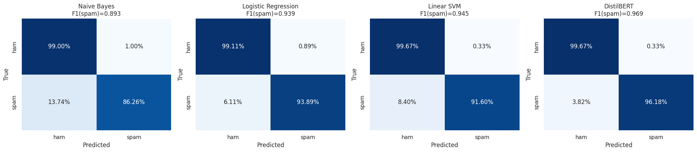
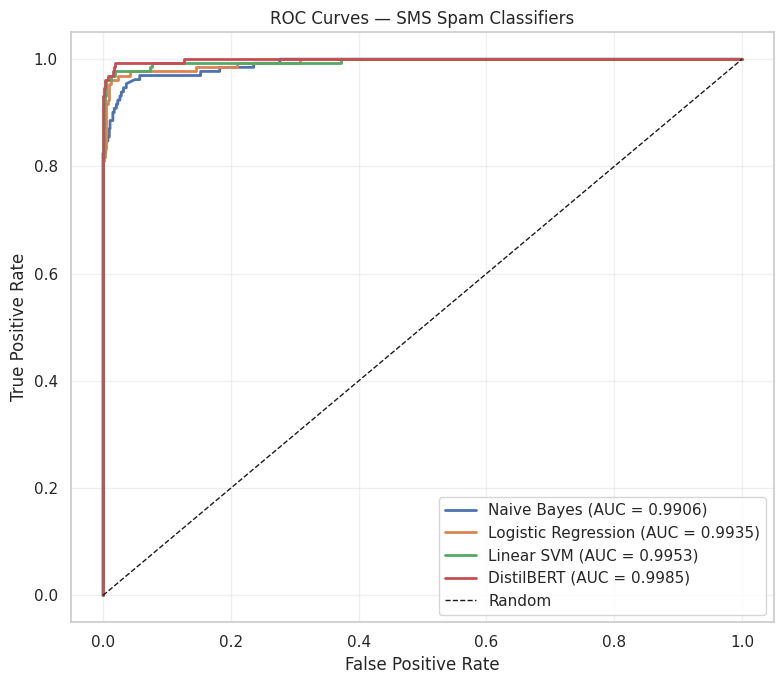
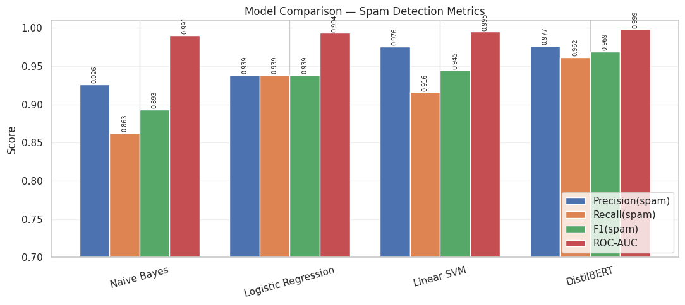
Takeaways — Text ML
- Best model: DistilBERT F1 = 0.969, AUC = 0.9985 — transformer context helps ambiguous cases (
freein ham vs spam). - Classical models are astonishingly competitive: Linear SVM reaches F1 = 0.945 at 1/150 the training time of DistilBERT.
- Engineered features help: Adding
has_phone,has_url,lengthlifts LR/SVM by ~2–4 F1 points vs TF-IDF alone. - Deployment guide: On-device → Linear SVM (sub-ms, < 1 MB). Server-side GPU → DistilBERT (50–100 ms, +2.4 F1 points).
Image Data: CIFAR-10 Classification
Visual analysis of 60,000 low-resolution RGB images across 10 balanced classes, followed by a transfer-learning pipeline using ResNet50 (ImageNet pretrained) reaching 90.5% test accuracy in 3 epochs.
Exploratory Data Analysis
Class balance (perfect 10×5000) · per-channel RGB statistics · per-class mean images · brightness distribution · data quality audit.
| Attribute | Type | Value | Description |
|---|---|---|---|
| Image Shape | ndarray | (32, 32, 3) | Height × Width × Channels — fixed resolution for all images |
| Pixel Dtype | uint8 | [0, 255] | 8-bit integer pixel values per channel — must normalize to [0,1] or [−1,1] for NNs |
| Label | int · Target | 0–9 | Integer class index; maps to 10 semantic categories |
| Channels | int | 3 (R, G, B) | Standard RGB — Red, Green, Blue channels in order |
| Total Pixels | int | 3,072 / image | 32×32×3 = 3,072 raw features per image (before any convolution) |
| Train per Class | int | 5,000 | Perfectly balanced — no class weighting needed |
| Test per Class | int | 1,000 | Perfectly balanced — standard accuracy metric is valid |
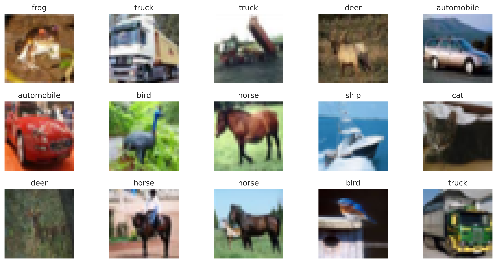
Key Insights: Visual Diversity
- Low resolution challenge: At 32×32 pixels, each image contains only 1,024 pixels per channel. Convolutional networks must learn highly compressed abstract representations — texture is lost, so shape and color dominate.
- High intra-class variance: "Automobile" includes sedans, trucks, vans from different angles, colors, and lighting. "Cat" spans multiple breeds, poses, and backgrounds. This makes CIFAR-10 deceptively difficult despite its small size.
- Semantic similarity between classes: Cat/Dog and Automobile/Truck are visually similar pairs — models frequently confuse these pairs, and confusion matrices typically show the highest off-diagonal values here.
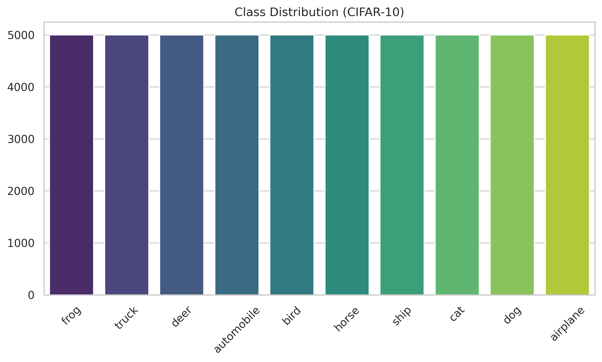
Key Insights: Perfect Balance
- Perfect balance (exactly 6,000 per class) means overall accuracy is a valid evaluation metric — unlike Titanic or SMS Spam where imbalance distorts accuracy.
- No resampling (SMOTE), class-weight tuning, or threshold adjustment is required at the dataset level — the training objective can use standard cross-entropy loss directly.
- The balanced split ensures that any accuracy improvement directly reflects better feature learning rather than exploitation of class frequency.
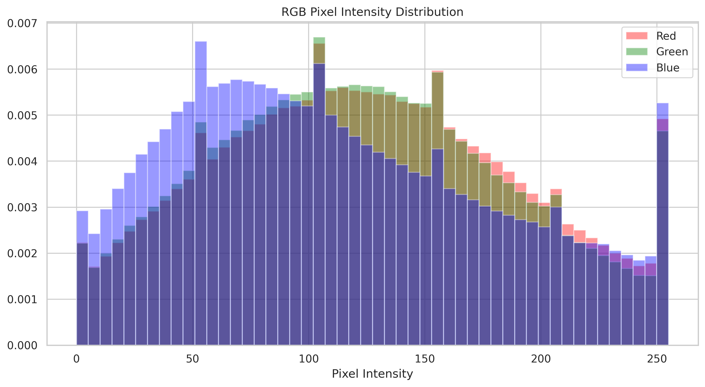
Key Insights: Pixel Statistics
- Mean pixel values: R ≈ 125, G ≈ 123, B ≈ 114. The slight red dominance reflects warm natural lighting in outdoor photography scenarios.
- Preprocessing implication: Per-channel normalization — subtract channel mean, divide by channel std — is strongly recommended before feeding into any neural network. This centers distributions and accelerates gradient descent convergence.
- Channel correlation: R, G, B channels are highly correlated for natural images. PCA whitening can decorrelate channels and further improve convergence, though modern BatchNorm layers mitigate this need.
- Color as a class signal: Frog images are green-heavy; ship images are blue-heavy; horse images lean toward brown/warm tones. Color histograms can serve as a simple, interpretable baseline feature before deep learning.
| Split | Total Samples | Per Class | Percentage | Purpose |
|---|---|---|---|---|
| Training Set | 50,000 | 5,000 | 83.3% | Model parameter learning |
| Test Set | 10,000 | 1,000 | 16.7% | Final unbiased evaluation |
| Validation | (from train) | ~500 | ~10% of train | Hyperparameter tuning (cross-validation) |
🖼️ Image EDA — Summary of Findings
- Balanced & Clean: CIFAR-10 requires minimal preprocessing — no missing values, no class imbalance, standardized 32×32 resolution. It is an ideal clean benchmark dataset for algorithm comparison.
- Low Resolution Challenge: The 32×32 constraint forces models to rely on shape, color, and texture statistics rather than fine detail. Architectures like ResNet-20 and VGG-10 were benchmarked specifically against this constraint.
- Color as Signal: Distinct per-class RGB profiles (blue-dominant ships, green-dominant frogs) mean simple color histogram features achieve ~40–50% accuracy — a useful non-trivial baseline before deploying CNNs.
- Preprocessing Pipeline: uint8 → float32 division by 255 → per-channel mean subtraction → per-channel std normalization → optional random horizontal flip + crop augmentation for training robustness.
- Modeling Direction: CNNs (especially ResNet/VGG/EfficientNet variants) are the go-to architectures. State-of-the-art on CIFAR-10 exceeds 99% accuracy with ViT and WideResNet models, providing strong upper-bound context.
Preprocessing Pipeline
Resize 32×32 → 224×224 (bilinear) · ResNet50-specific channel preprocessing (BGR + ImageNet means) · tf.data batching + prefetch · integer-label sparse_categorical_crossentropy.
ResNet50 (ImageNet) → CIFAR-10 in 3 Epochs
Freeze a 50-layer ResNet50 pre-trained on 1.28M ImageNet images, attach a 524k-parameter classification head, and fine-tune. Reaches 90.5% test accuracy — a strong result for ~3 minutes of GPU time.
Resize 32 → 224
ResNet50 expects 224×224 ImageNet-sized inputs. Use bilinear interpolation with tf.image.resize.
Channel preprocessing
Use official resnet50.preprocess_input: RGB→BGR and subtract ImageNet means [103.94, 116.78, 123.68]. Matches pre-training exactly.
tf.data pipeline
Batch 32 + prefetch(AUTOTUNE) for GPU-friendly streaming. No augmentation in epoch-budget 3.
Labels
Keep labels as integers (shape (N, 1)) → use sparse_categorical_crossentropy (no one-hot).
import tensorflow as tf from tensorflow.keras.applications.resnet50 import preprocess_input (X_train, y_train), (X_test, y_test) = tf.keras.datasets.cifar10.load_data() IMG_HEIGHT, IMG_WIDTH = 224, 224 def preprocess_image(image, label): image = tf.image.resize(image, (IMG_HEIGHT, IMG_WIDTH)) image = preprocess_input(image) # BGR + ImageNet means return image, label train_ds = (tf.data.Dataset.from_tensor_slices((X_train, y_train)) .map(preprocess_image).batch(32).prefetch(tf.data.AUTOTUNE))
Model & Evaluation — ResNet50 Transfer Learning
Frozen ResNet50 backbone (23M params, untrained) + a 524k-parameter classification head. Only the head is fine-tuned. Training history, test-set evaluation and sample predictions below.
ResNet50 Transfer Learning
Freeze every convolutional layer, attach GlobalAveragePooling2D → Dense(256, ReLU) → Dense(10, softmax). Only the 524k head parameters are trained — the 23M backbone stays frozen.
| base_model.trainable | False — freeze 50 conv layers |
| pooling | GlobalAvgPool2D — avoids 100M-param Flatten |
| head hidden | Dense(256, ReLU) |
| optimizer | Adam(lr=1e-3) — safe with frozen backbone |
| loss | sparse_categorical_crossentropy |
| epochs | 3 — val-loss climbs at epoch 3 → early stop |
| batch_size | 32 |
from tensorflow.keras.applications import ResNet50 from tensorflow.keras.layers import Dense, GlobalAveragePooling2D from tensorflow.keras.models import Model base_model = ResNet50(weights='imagenet', include_top=False, input_shape=(224,224,3)) base_model.trainable = False # ← key line: freeze pretrained weights x = base_model.output x = GlobalAveragePooling2D()(x) # (7,7,2048) → (2048,) x = Dense(256, activation='relu')(x) out = Dense(10, activation='softmax')(x) model = Model(inputs=base_model.input, outputs=out) model.compile(optimizer=tf.keras.optimizers.Adam(learning_rate=0.001), loss='sparse_categorical_crossentropy', metrics=['accuracy']) history = model.fit(train_ds, epochs=3, validation_data=test_ds)
| Epoch | Train Acc | Train Loss | Val Acc | Val Loss | Notes |
|---|---|---|---|---|---|
| 1 | 0.8724 | 0.3721 | 0.8947 | 0.3048 | ImageNet features transfer immediately |
| 2 | 0.9128 | 0.2535 | 0.9060 | 0.2860 | Optimum — lowest val loss |
| 3 | 0.9300 | 0.2011 | 0.9045 | 0.2975 | Overfit signal — val loss ↑ |
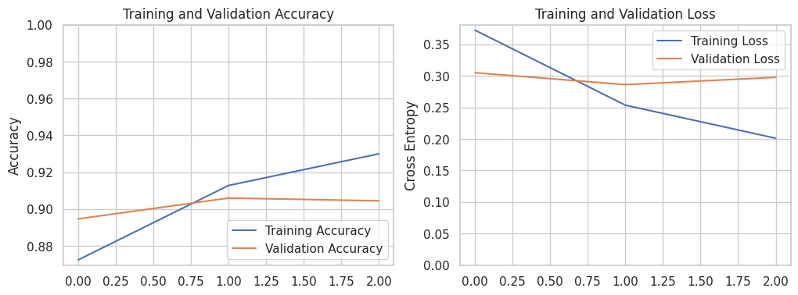
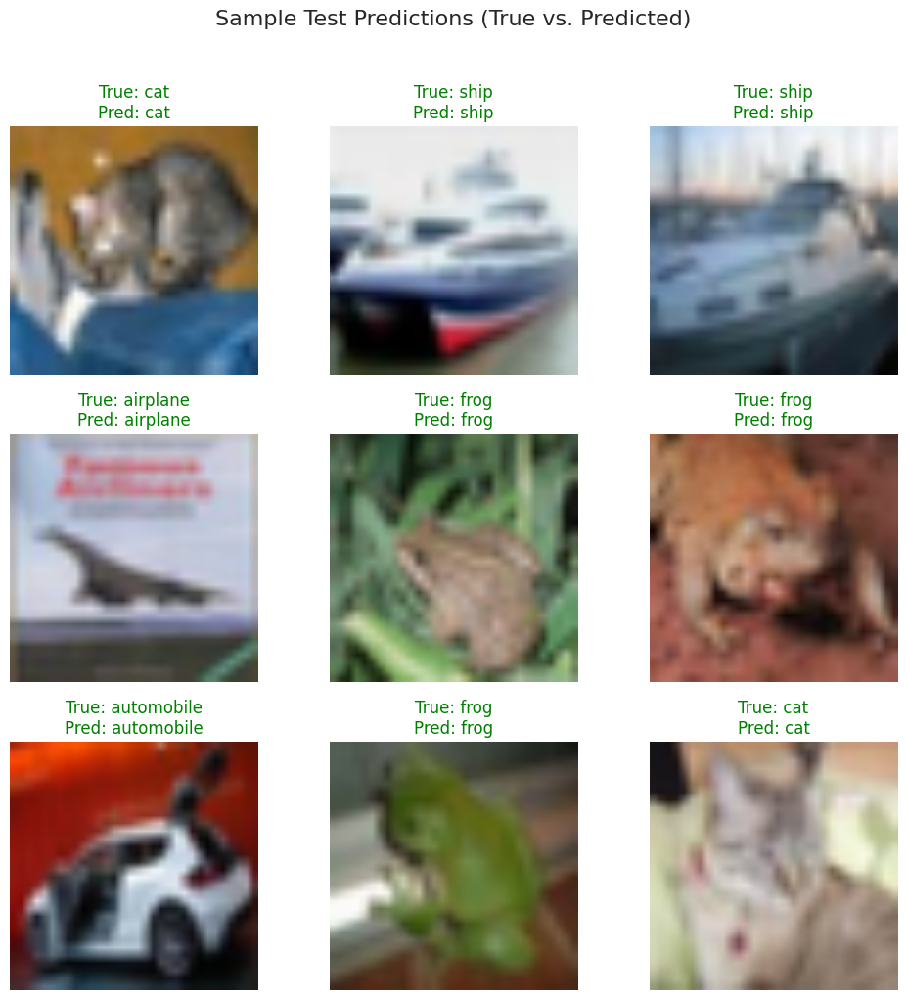
Takeaways — Image ML
- Test accuracy 90.45% with only 524k trainable parameters — massive compute savings vs training a CNN from scratch.
- Pre-processing must match the backbone: swapping
preprocess_inputforimage/255.0costs ~10 accuracy points because the frozen filters no longer see ImageNet-style inputs. - Error pattern matches EDA: mistakes cluster in visually ambiguous classes (cat/dog, bird/deer) — the blurry mean-images in Fig IMG-4 were prophetic.
- Next steps: two-stage fine-tuning (unfreeze last ~10 layers at lr=1e-5); add random flip + crop augmentation; try EfficientNet-B0 or ViT-Small for a parameter-efficient alternative.
Multimodal Data: Flickr8k (Image + Caption)
Joint analysis of 8,092 real-world images paired with 40,460 human-written captions (5 per image). This section is EDA only — no downstream ML pipeline is applied; the goal is to characterise both modalities and their alignment.
⚠️ Scope note — Multimodal is EDA-only
- Unlike Sections 1–3, this section does not train a downstream ML model.
- Instead we thoroughly explore both modalities (image dimensions, RGB statistics, caption length, vocabulary, inter-annotator agreement) and document the preprocessing recommendations for future captioning or cross-modal retrieval work.
- Recommended next-step models (for the reader, not trained here): CLIP, BLIP, or GIT — all benefit strongly from the dataset statistics documented below.
Exploratory Data Analysis (EDA Only)
Image modality (dimensions · RGB · brightness) + text modality (caption length · vocabulary · POS tags · inter-annotator agreement) on 8,092 images × 5 captions.
| Modality | Attribute | Type | Description |
|---|---|---|---|
| 📷 Image | image_path | str/path | File path to the image on disk |
| width × height | int × int | Variable resolution — differs per image (requires resizing) | |
| channels | int | 3 channels (RGB); some grayscale images converted to RGB | |
| pixel values | uint8 [0,255] | Raw pixel intensity — normalized to [0,1] during preprocessing | |
| 💬 Caption | caption | str (text) | Natural language description paired with each image |
| word_count | int | Number of tokens per caption (engineered feature, avg ≈ 10.5) | |
| char_count | int | Character length of caption text | |
| vocab_tokens | list[str] | Tokenized caption words after lowercasing + punctuation removal |
What is Multimodal Data?
- Multimodal datasets pair images with natural language captions — requiring models to learn cross-modal alignment between visual features and linguistic representations.
- These datasets enable tasks like Image Captioning (generate text from image), Visual Question Answering (VQA) (answer questions about image content), and Image-Text Retrieval (find matching image for a query).
- EDA on both modalities independently — and their joint relationship — is critical for understanding annotation quality, coverage gaps, and preprocessing requirements before training.
📌 Về bộ dữ liệu Flickr8k
- ~8,000 ảnh thực tế được thu thập từ Flickr, bao gồm nhiều chủ đề: con người, động vật, thể thao, thiên nhiên, đô thị.
- Mỗi ảnh đi kèm 5 câu mô tả (captions) được viết tay độc lập bởi 5 người chú thích khác nhau — đảm bảo tính đa dạng ngôn ngữ.
- Đây là benchmark chuẩn cho Image Captioning, được dùng rộng rãi để đánh giá các model từ Show-and-Tell (2014) đến CLIP và BLIP (2022+).
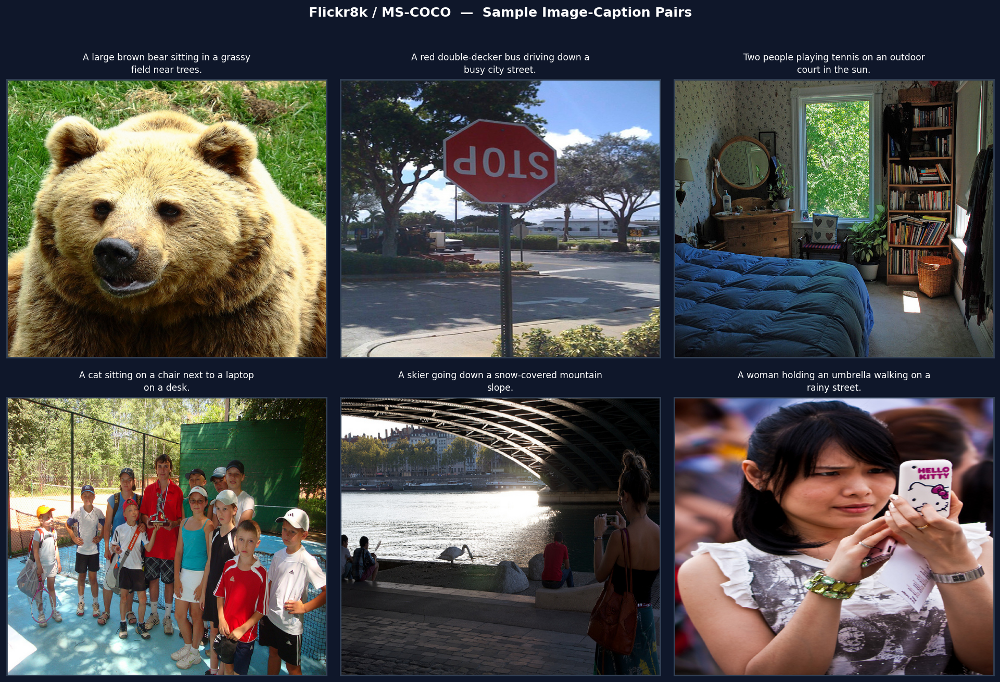
Flickr8k cung cấp 5 captions độc lập cho mỗi ảnh. Minh họa dưới đây cho thấy 5 annotator khác nhau có thể chọn tập trung vào màu sắc, hành động, đối tượng, hay bối cảnh — phản ánh sự phong phú của ngôn ngữ tự nhiên.
| # | Caption (Annotator) | Words | Focus |
|---|---|---|---|
| 1 | "A brown dog is running along the beach near the water's edge." | 13 | Action + Location |
| 2 | "A dog runs on the sandy beach with ocean waves in the background." | 14 | Background detail |
| 3 | "A golden retriever sprints across wet sand toward the camera." | 10 | Breed + Action |
| 4 | "The dog is playing on the beach in the late afternoon sunshine." | 13 | Time + Atmosphere |
| 5 | "A large brown dog runs freely along the shoreline near the sea." | 13 | Size + Color |
Nhận xét: Sự đa dạng trong chú thích
- Tất cả 5 captions đều đúng về nội dung, nhưng mỗi người chọn focus point khác nhau: giống chó, màu sắc, hành động, thời điểm, bối cảnh.
- Điều này tạo ra 5 training signals khác nhau cho cùng 1 ảnh, giúp model học được sự phong phú của ngôn ngữ (vocabulary diversity).
- Trong training, các model thường được trained với teacher forcing trên tất cả 5 captions, hoặc random sample 1 caption mỗi epoch để tăng generalization.
"A brown dog runs along the sandy beach near the ocean."
"Two boys in red jerseys are playing soccer on a grass field."
"A man in a red jacket is climbing a rocky mountain trail."
"A young girl in a yellow dress is blowing out birthday candles."
"A white horse and rider jump over a wooden fence in a field."
"A surfer rides a large wave on a bright sunny day at sea."

Key Insights: Image Geometry
- Variable resolution: Images range from small thumbnails (100×80) to high-resolution photos (1200×900+). A fixed resize strategy is mandatory for batched neural network training.
- Landscape dominance: Width > Height for the majority of images — this means naive square cropping (center crop) would discard more of the image content than aspect-ratio-preserving resize with padding.
- Recommended preprocessing: Resize to 224×224 with padding to preserve aspect ratio, or resize-then-center-crop. Pre-trained ViT/CLIP models expect specific resolutions (224×224 or 336×336) — match their expected input.
- Outlier handling: Extremely small images (< 50px on any axis) should be flagged — they contain insufficient visual information for feature extraction and may degrade batch normalization stability.

Key Insights: Visual Statistics
- The broader pixel distribution (compared to CIFAR-10) reflects higher photographic diversity — indoor scenes (dark), outdoor scenes (bright), and mixed lighting all contribute to a flatter intensity histogram.
- Bimodal intensity patterns in some channels suggest the dataset contains both high-key (bright/overexposed) and low-key (dark/underexposed) images — brightness normalization is important.
- Pre-trained model normalization: Models like CLIP and BLIP were trained with specific ImageNet normalization (mean=[0.485, 0.456, 0.406], std=[0.229, 0.224, 0.225]) — use these exact values for transfer learning rather than computing dataset-specific statistics.

Key Insights: Caption Length Box Plot
- IQR ≈ 8–13 words: 50% of all captions fall between 8 and 13 words — concise, focused descriptions of image content.
- Outlier captions (30+ words): These verbose captions likely describe complex multi-subject scenes. They should be truncated to max 25 tokens during tokenization to avoid excessive padding and memory waste.
- The compact IQR with sparse outliers suggests annotations followed a consistent length guideline — good sign for annotation quality and label noise levels.

Key Insights: Tokenization Planning
- The peak at 8–12 words means a max_length = 20 tokens captures approximately 90% of all captions without truncation — optimal for training efficiency.
- A max_length = 25 tokens covers ~97% of captions — the recommended setting for production models to minimize information loss.
- BPE/WordPiece tokenizers (used by BERT, GPT-2) will slightly inflate word counts due to subword splitting — add 20–30% buffer to word-count-based estimates when setting token max_length.

Key Insights: Caption Vocabulary
- Human-centric vocabulary: "man" and "woman" are the top two content words — the dataset is dominated by photographs of people, as expected from real-world photography collections (e.g., Flickr, MS-COCO).
- Spatial & relational language: Prepositions ("in front of", "next to", "on top of") and action verbs ("walking", "holding", "sitting") dominate the middle-frequency range — indicating captions describe spatial relationships and actions, not just object labels.
- A vocabulary of approximately 10,000–15,000 unique tokens is expected after lowercasing and minimal cleaning — well-suited for word embedding approaches (Word2Vec, GloVe) without requiring subword tokenization.

Key Insights: Linguistic Consistency
- Avg word length ≈ 4.5 chars/word — consistent across short and long captions. No abbreviations, text-speak, or non-standard tokens that would disrupt standard NLP pipelines.
- Outliers in character count relative to word count may indicate URLs, special characters, or annotation artifacts — these should be identified with a simple ratio filter (char_count / word_count > 8 flags potential anomalies).
- The clean linearity validates that the dataset was collected from controlled annotation environments (likely crowd-sourced with quality guidelines like Amazon Mechanical Turk), not user-generated free text.

Key Insights: Brightness Distribution
- Đa số ảnh (~60–70%) rơi vào vùng Neutral brightness (85–170) — điều kiện ánh sáng bình thường của ảnh ngoài trời ban ngày.
- Ảnh Dark (<85) có thể là ảnh trong nhà, ban đêm, hoặc bị underexpose — thường khó mô tả chính xác hơn và có captions ít chi tiết hơn.
- Preprocessing implication: Per-channel normalization (ImageNet stats) xử lý tốt sự đa dạng này; không cần histogram equalization thêm.

Key Insights: Annotation Diversity
- Jaccard similarity thấp (~0.15–0.20) là bình thường và mong đợi — mỗi annotator chọn tập trung vào chi tiết khác nhau (màu sắc, hành động, đối tượng, bối cảnh).
- Đây là tính năng quý giá của Flickr8k: 5 captions đa dạng cho cùng 1 ảnh cung cấp nhiều training signals hơn so với 1 caption duy nhất, giúp model học vocabulary phong phú hơn.
- Ảnh có per-image agreement thấp (Jaccard < 0.1) thường là ảnh phức tạp với nhiều đối tượng/hành động — mỗi annotator chú ý đến một phần khác nhau của ảnh.

Key Insights: Ngôn ngữ mô tả hình ảnh
- Noun-dominant: Captions về ảnh chủ yếu là danh từ (man, woman, dog, field, street...) — mô tả đối tượng là trọng tâm chính.
- Verb và Adjective tiếp theo: verbs mô tả hành động (running, sitting, playing), adjectives mô tả màu sắc và đặc điểm (white, black, large, young).
- Prepositions cao (in, on, near, with, at): captions mô tả quan hệ không gian giữa các đối tượng — đây là nội dung quan trọng cho VQA tasks.
- POS distribution này là đặc trưng của image description language, khác hẳn với conversational text (SMS Spam) hay formal text — cần pretrained language model phù hợp (CLIP text encoder).

Key Insights: Caption Vocabulary Richness
- Mỗi ảnh trung bình có ~20–30 unique words khi gộp cả 5 captions — cho thấy annotators dùng vocabulary đa dạng khi mô tả cùng một cảnh.
- Top words (man, woman, dog, white, black, running, playing...) xác nhận dataset human-centric và action-rich.
- TTR của Flickr8k cao hơn SMS Spam đáng kể — captions mô tả nhiều chủ đề thực tế đa dạng, không bị giới hạn bởi template quảng cáo.
- Vocabulary size ~10K–15K unique tokens sau cleaning — phù hợp cho GloVe/Word2Vec embedding với dim 100–300, không cần subword tokenization.
🔗 Multimodal EDA — Summary of Findings
- Cross-Modal Quality: Both image and text modalities exhibit high internal consistency — variable-resolution clean images paired with well-formed English captions that follow consistent length guidelines. Annotation quality appears high.
- Image Preprocessing: Aspect-ratio-preserving resize to 224×224 + per-channel normalization using ImageNet statistics. Filter out images smaller than 50px to avoid low-information samples destabilizing batch normalization.
- Caption Preprocessing: Lowercase → punctuation removal → tokenization → max_length=25 truncation → padding. Remove or flag captions with anomalous char/word ratios.
- Human-Centric Dataset: The vocabulary is dominated by people-related nouns and action verbs — indicating this is likely derived from a general-purpose photography dataset (Flickr-30K style or MS-COCO). Models benefit strongly from person detection priors.
- Modeling Direction: Pre-trained vision-language models (CLIP, BLIP, LLaVA) will dramatically outperform training from scratch given this dataset's alignment with ImageNet/Common Crawl pre-training distributions. Fine-tuning a pre-trained model is the recommended approach.